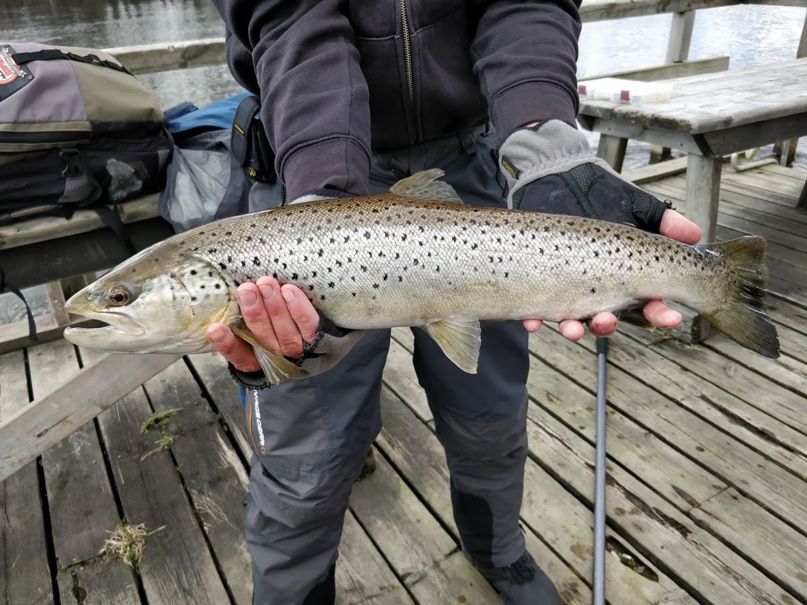
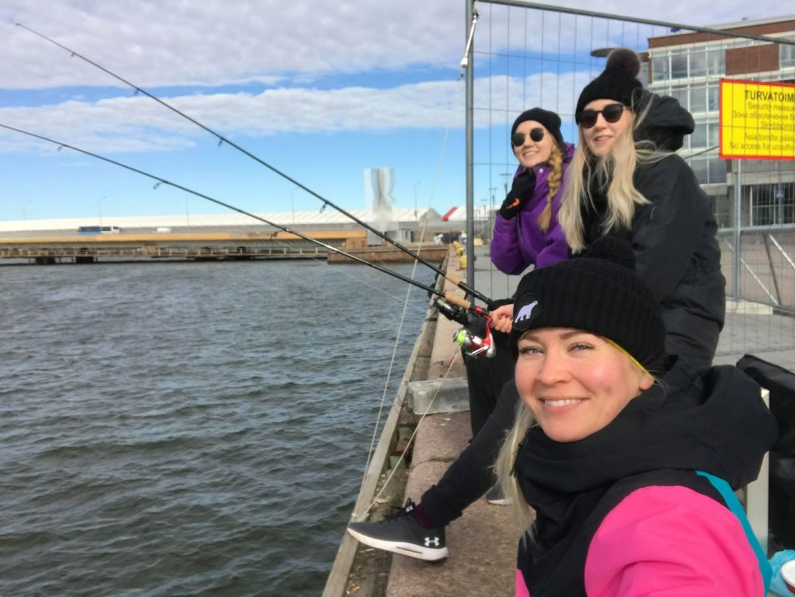
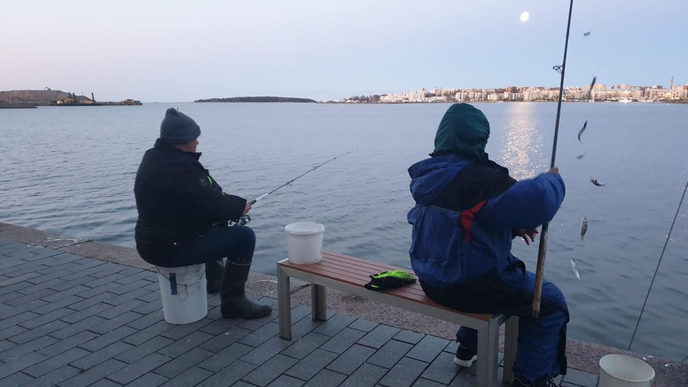
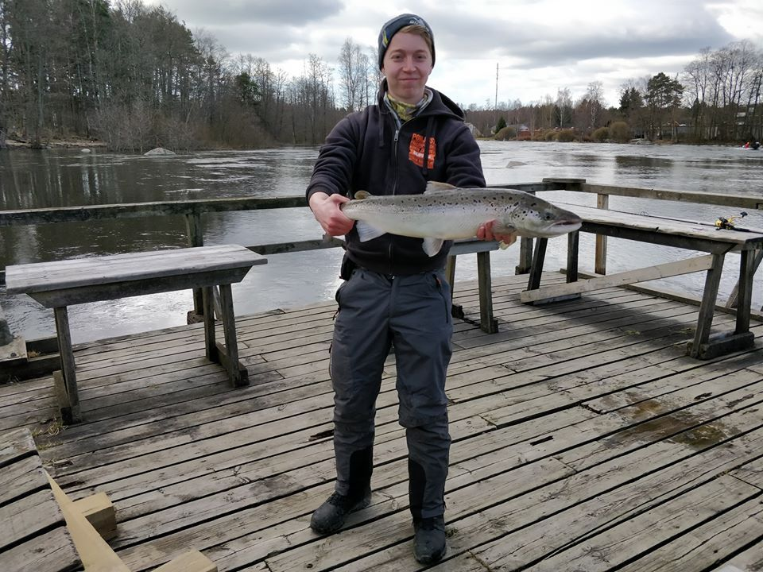

Blogitekstit · Huhtikuu 2020
Huhtikuu - mitä tästä kuukaudesta muistetaan?

Aivan mahtavat! Unohin yhen vavan yöksi rantaankin 😂 -Miika
Nostetaan heti yhteenvedon kärkeen kuukauden kovin onnistuminen lajien osalta.
Vaskikala (Spinachia spinachia) saaminen fongarille on kuin Indiana Jones löytäisi Graalin maljan.
Toukokuu on otollisimpia aikoja etsiä tätä vesiemme upeaa fiilistelijää, lillujaa ja mestari piiloutujaa. Rakkoleväpuskien ärsyttäjää, joka ei välitä syöteistä ja iskee Kalamaraton kilpailun tiimellyksessä painoon eikä tarjottuun syöttiin.
Huhtikuun kovimpia onnistumisia oli tämä Miikan lähes SE-lukemaan yltänyt vaskikala ja lajipiste nro 29, elämänpiste nro 47. Kyseinen yksilö oli suurin vapavälinein pyydetty ja toivottavasti saaja ilmoittaa lajin rekisteriin ja saa ansaitsemansa SE-tittelin.
Onnea omasta ja koko Fongaus-yhteisön puolesta!
Videolla vapautan oman elämänpisteeni Helsingissä 30.4.2018.
Miika takoi Kymijoella vajaat 100 tuntia lupia saaden vain alamittaisia kaloja. Onneksi sinnikkyys palkittiin ja lajipisteeksi nousi lopulta lohi.


Huhtikuu alkoi koronavirus pandemian hiljentämässä Suomessa osaltani hauen -ja siiankalastamisella Laajasalossa. Sattuman kautta päädyin maikkarin uutisiin pyytämään tyhjää. Tuosta reissusta voi lukea tästä.

Kymijoella juniorit Justus ja Niko veteli lohia sekä siikoja, Miika Kovanen taas heitteli tyhjää.
Hienoa on kuulla kuinka Kymijoen lohikonkari Petri auttoi poikia lohen jallittamisessa ja pojat taas siian osalta konkaria. Tämä yhteisöllisyys ja toisten auttaminen on todella hieno piirre lajikalastuspiireissä.
"66 h lupia takana ja yksi kala 😁 ja sekin 4 cm alle alamitan", - Miika
9.4.2020 torstai eli eilen illalla pääministeri Sanna Marin kertoi, että valmiuslain mukaan Uudenmaan sulkua ei voi pitää päällä, koska tilanne on muuttunut parempaan suuntaan.
Seuraavana päivänä Instagramista bongasin tutun naisporukan litkailemassa silakkaa. Kaapelitehtaan muurilta löytyi kuvissa aina iloiset Keijukalojen Jaana, Eeva ja lisävahvistuksena mukana oli Anne. Tämä Instagram-tili kannattaa laittaa seurantaan, tykkää ja seuraa Keijukaloja tästä.


Kuukauden alussa juttelin taimenen heittokalastusreissuta Hangon suuntaan paikallisen kalastajan kanssa. Ikinä en ole rannalta kalastaen taimenta varsinaisesti saanut, ainoa on tullut sivuosumana Lauttasaareen suuntautuneella siiankalastusreissulla, jolloin hitaasti uppoavaan matoon tälläsi istaritaimen kiinni.
Myös Vanhankaupunginkosken suvannolta kuului "toutainmestari" kautta tieto, että vimpoja on noussut jo Pornaisten puolen muurilta.


Vimpapiste nousi nopeasti kuten silakkapistekin, molemmat hauenkalastusretken ennakko ja jälkimainingeissa. Silakkaa varten en edes kasannut omia välineitä vaan kysyi kahdelta herralta saisinko litkaha heidän välinein yhden silakan juttelun lomassa.
Se oli ensimmäinen tiputus ja silakka oli ylhäällä, siitä oli hyvä jatkaa matkaa kohti Espoossa löytyvää Haukilahtea.
Hauki jäi saamatta, mutta kotimatkalla nappasin Vanhankaupunginkosken suvannolta vimpapisteen pois kuleksimasta.


Lohi voi tulla tunnissa tai liki sadassa tunnissa. Tulee lopulta kuitenkin -Miika
Kuun puolivälissä tuli tietoa, että Kemiönsaaresta olisi siianonkijoille noussut simppuja oikein kiusaksi asti. Monta ihmistä laitteli viestiä tästä ja paikkaa etsittiin usean kalastajan toimesta. Lopulta apu löytyi vanhan kollegani, eli lähimmän esimieheni toimesta. Kiitos J. avusta.
Kuun puolen välin jälkeen aukesi Uusimaa, retki Kymijoelle lyötiin lukkoon ja päivämääräksi sovittiin 19.4.2020 sunnuntai. Tuosta riittää tarinaa, kannattaa lukasta tarina tästä.
Huhtikuu toi lajilistalleni salakan, silakan, vimman, hauen, lohen, piikkimonnin, kivisimpun, mustatäplätokon, mudun...
Toukokuu on lämpimämpien vesien aikaa, lammissa olevat ruutanat, suutarit ja muut lajit aktivoituvat ja lajilistalle nousee helppoja lajeja pois suuri joukko. Haastavimpia lajeja tulee olemaan toutain sekä vaskikala, jotka on laskettu toukokuun lajeiksi listallani.
Juuso painoi lomaviikot armeijasta kovaa tahtia ja 28 lajia sai kasaan ennen paluuta armeijan harmaisiin. Harmittaa hänen pakollinen pidempi tauko, jolloin emme saa Juusosta kirittäjää. Onneksi herra ehtii touko-kesäkuun vaihteessa taas kalastamaan eikä peliä ole vielä menetetty vaskikalan tai nokkakalan osalta.

Loppukuusta Miika teki sissi-iskun Hankoon ja onnistuikin elämänpistejahdissaan saamaan vaskikalan listalleen. Onnea elämänpisteestä nro. 47. Miikan vauhti on kovempi kuin Timillä ennätysvuotenaan, tästä tulee mielenkiintoinen loppuvuosi. Oma reissuni Hankoon tuotti vesiperän, tuon MP-reissun tarinan voit lukasta tästä.
1/3 vuotta takana, paljon on päiviä jäljellä, mutta niin on lajejakin. Miikalla lajeja jo 30 kasassa, perässä Juuso ja minä. Lajeja tulee nousemaan toukokuussa reilusti jokaiselle fongarille joka käy lajeja jahtaamassa.
Huhtikuussa lajeiksi listalle fongareille nousi: silakka, vimpa, allikkosalakka, hopearuutana, kivennuoliainen, suutari, liejutokko, ruutana, sorva, vaskikala. Yhteensä listalaisilla on lajeja kasassa 40.
Niin se aika juoksee ja on toukokuu...
Eniten tässä kuukaudessa harmittaa Kalamaratonien skippaminen ja ettei monen hengen kimppareissuja viitsi hirveästi tehdä. Tämä nostaa kustannuksia ja vaatii lisää miettimistä.
Huhtikuun retkistatistiikka
- lajeja kasassa 24 | reissuja 7 | tunteja 57 | kilometrejä 882,3
Facebookin Lajikalastus 2020 listaus
Seuraa ennätyksen etenemistä
Pidän kirjaa lajilistasta ja tarkemmasta retkidatasta Google -taulukossa, joka löytyy jokaisesta ennätysyrityksen postauksesta. Tästä linkistä taulukko avautuu uuteen ikkunaan.
Seurantatilanne löytyy myös blogini oikeasta yläreunasta.
Vuoden aikana ennätysyrityksessä kulkee mukaan myös tämä kalataitelija-graaffikko Sakke Yrjölän suunnittelema SPECIES FIN 53 -merkki.
Paitakulmassa painatin pipoon ja lippikseen saman merkin. Tavoitteeni on saada aikaiseksi 53 saaliskuvaa tekstin alussa tekemääni taulukkoon joissa kaikissa kuvissa näkyisi tuo kyseinen tunnus.
Paitakulma on Suomalainen perheyritys, joka haluaa panostaa laatuun ja asiakastyytyväisyyteen. Tutustu yrityksen palveluihin tästä.